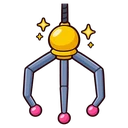
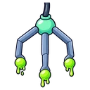
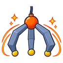
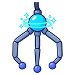
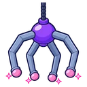

Standardgreifer
Drei Finger · das Grundmodell
- Eine Runde
- 1 Münze
In diesem Modus zahlst du an den Greifautomaten der Spielhalle Münzen, steuerst den Greifer und fängst Plüschtiere. Gefangene Plüschtiere gehören dir und sind in Kämpfen und in der Burgverteidigung mit dabei.

Drei Finger · das Grundmodell

Maximale Reibung · rutscht am wenigsten

Großer, schwerer Greifer

Zieht ein nahes Plüschtier an, bis der Greifer ganz oben ist

Vier Finger · fester Griff von vier Seiten